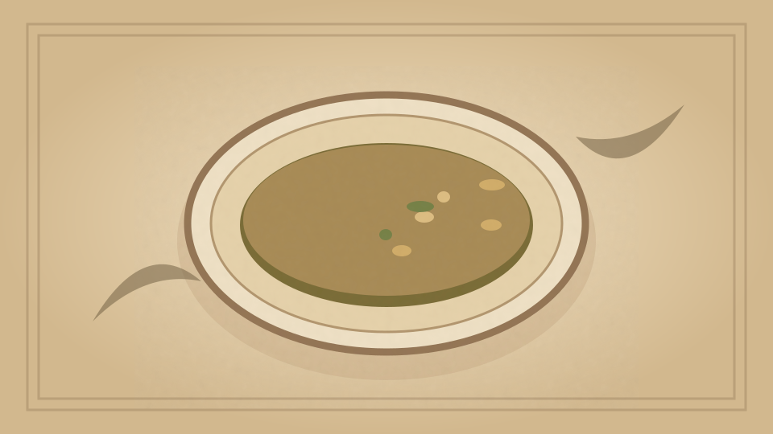

1910 · Fannie Merritt Farmer · SOUPS
French White Soup
The Boston Cooking-School Cook Book

Historical Recipe
The following text is extracted from the 1910 edition, retaining historical terminology and quantities.
Original Ingredients & Directions
4 lb. fowl
Knuckle of veal
3 qts. cold water
1 onion, sliced
6 slices carrot
½ bay leaf
1 sprig parsley
½ teaspoon thyme
½ teaspoon peppercorns
½ tablespoon salt
1 tablespoon lean raw ham, finely chopped
4 tablespoons butter
3 tablespoons flour
1 cup cream
Yolks 2 eggs
Wipe, clean, and disjoint fowl. Wipe veal, remove from bone, and cut in small pieces. Put meat, bone, and water in kettle, heat slowly to boiling-point, skim, and cook slowly four hours. Cook vegetables and ham in one tablespoon butter five minutes, add to soup with peppercorns and salt, and cook one hour. Strain, cool, and remove fat. Reheat three cups stock, thicken with remaining butter and flour cooked together, and just before serving add cream and egg yolks. Garnish with one-half cup cooked green peas and Chicken Custard cut in dice.
Automatically extracted transcription; editorial verification pending. Historical instructions may not meet modern food-safety standards.